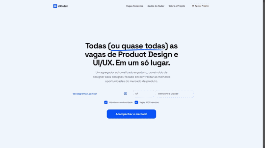

|
|
|
Novidade: O UX Fetch agora filtra as vagas para o SEU momento de carreira 🎯Olá, Sempre recebi o feedback de que o radar do UX Fetch é ótimo, mas poderia ser ainda melhor se enviasse apenas o que importa para você. Afinal, um designer Sênior de UX/UI não precisa ver vagas de Estágio em Design Gráfico. Por isso, acabo de lançar uma nova funcionalidade: O Filtro por Área e Senioridade. Para que eu possa ajustar o seu radar e te enviar apenas as vagas que dão match com o seu perfil atual, preciso que você me diga o que está buscando. Demora literalmente 5 segundos.
 Não quer filtrar? Se você não atualizar, não tem problema! Você continuará recebendo as vagas padrão de UX/UI, Product Design e Liderança, exatamente como sempre foi. (Vagas de Design Gráfico, 3D e Motion só serão enviadas se você ativá-las manualmente). Além disso, a partir de hoje você tem o poder nas mãos. Sempre que quiser ajustar o radar de acordo com o seu momento profissional, basta clicar em "⚙️ Ajustar minhas preferências" no rodapé de qualquer e-mail que eu te enviar.
Abraços, |
|
|
Feito para fortalecer o ecossistema.
Você está recebendo este e-mail pois se inscreveu no UX Fetch. |